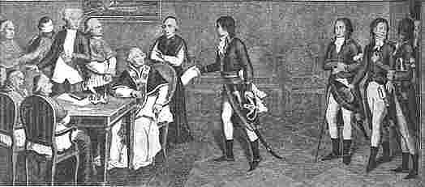
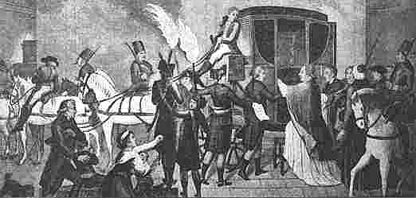
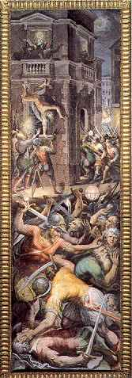
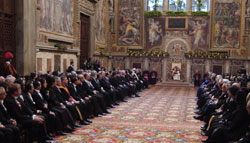

CHAPTER THIRTY-FOUR
The Deadly Wound
Ends the 1260 Years
I. Papal
Government Supplanted and Pontiff Banished
The immediate problem is to trace the overthrow
of the Papacy in Italy in 1798. One of the most interesting accounts,
as well as a very trustworthy one, of the overthrow of the papal
government is by Richard Duppa,[1] in A Brief Account of the
Subversion of the Papal Government, 1798.[2] Of this work Duppa
says, "It was written with the strictest attention to truth; the facts
were recorded by one who was witness to the events." And he adds,
"After a lapse of nine years, no part has been invalidated."[3]
1. NAPOLEON'S GOAL WAS FREEING OF ROME. — In 1796 Napoleon
Bonaparte, on his way to overthrow the pope, incited his soldiers with
one of his fiery speeches to the effect that they still had one
offense to avenge. The hour of vengeance had struck. To restore the
Capitol, to awaken the people of Rome, blunted from centuries of
slavery, were to be the fruits of their victories; they would mark an
epoch in history. Hearing of this, Pius VI (1775-1798)—born in 1717 as
Giovanni Angelico Braschi, and died in 1799—attempted to fortify his
position and
1 Richard Duppa (1770-1831), English
lawyer, writer, and artist, studied art in Rome as a youth. Educated
at Trinity College, Oxford, and Middle Temple, he received an L.L.B.
from Trinity Hall, Cambridge. He was also an F.S.A. Duppa published a
dozen works, besides classical schoolbooks, travels in Europe, and
biographies of Michaelangelo, Raphael, and others.
2 Third Edition enlarged and more heavily documented and
illustrated, London: Murray, 1807. (2nd ed., 1799).
3 R. Duppa, A Brief Account of the Subversion of the
Papal Government, 1798, Preface.
[pg. 750]
neglected nothing that might prevent the great
catastrophe. Meantime he sent an emissary to Napoleon at Milan and
proposed an armistice, offering heavy reparations and the surrender of
Ancona, Bologna, and Ferrara—the northern portion of the papal
territory.[4]
The French Directory demanded that the Papacy revoke,
retract, and disannul all bulls, briefs, rescripts, and decrees
affecting ecclesiastical affairs in France issued since the beginning
of the Revolution in 1787. This Pius VI refused, declaring he would
oppose it with force, and broke off the parley. Napoleon took Imola,
the Romagna, the duchy of Urbino, routed the papal army, and made new
overtures to the pope.
2. TOLENTINO FOLLOWED BY KILLING OF DUPHOT. — The Directory
wished Napoleon to destroy the Papacy,[5] and directed that no
successor to Pius VI be elected to the papal chair. It hoped as a
consequence, to deliver Europe from the papal supremacy.[6] But
Bonaparte negotiated the Treaty of Tolentino, on February 19, 1797, by
which the Pope was to abandon Avignon, Venaissin, Bologna, Ferrara,
and Romagna (Peter's patrimony), in addition to heavy indemnities.[7]
The papal treasury was unable to meet the monetary demand, and the
populace of Rome was showing increasing hostility to the papal
government. The pope could scarcely appear in public without being
hissed.[8] Revolution was in the air. Incendiary placards were posted
on the one hand, and on the other the French were exposed to
increasing insults. A crisis approached.
Joseph Bonaparte was sent to Rome as French ambassador, and
sought to quiet the situation. But on December 27, 1797, a riot
threatened, and the papal government ordered the mutineers to
disperse. Duppa records that some in the mob, "proceeded to make
public harangues, and pretended to shew clearly,
4 I. Bertrand, Le Pontificat
de Pie VI et l'atheisme revolutionnaire, vol. 2, pp. 340 ff. The
population of the Ecclesiastical State was given as 2,200,000.
5 George Trevor, Rome: From the Fall of the Western
Empire, p. 439; Duppa, op. cit., p. 14.
6 Alison, op. cit., vol. 3, p. 551n.
7 Duppa, op. cit., p. 3.
8 Pius VI, Historical and Philosophical Memoirs of Pius
the Sixth and of His Pontificate (translated from the French),
vol. 2, pp. 314 ff.
[pg. 751]
by several texts of scripture, that the time was at
hand to overthrow the existing government."[9] The papal troops
advanced, and the revolutionists sought refuge at the French embassy.
The pontifical soldiers followed and opened fire. Then the French
general Duphot sought to quiet the melee, but was shot, and dispatched
with papal bayonets.[10]
3. BERTHIER'S TROOPS ENTER ROME
BY INVITATION. — The killing of General Duphot brought on the crisis.
The ambassador left Rome in indignation. Reparations were refused, and
the Directory, on January 1, 1798, ordered General Berthier,[11] then
in Milan, to march upon Rome and conquer it, and to establish a Roman
republic.[12]
General Berthier advanced, but stopped outside of Rome,
awaiting an invitation to enter. Patriots invited him to do so. Thus
the French troops entered Rome on February 10, 1798. Berthier
immediately pledged by proclamation that the Catholic "cult" should
remain untouched.[13]
4. PROCESSIONAL LAUNCHED TO STAY
EVIL DAY. — As a last resort the church had had recourse to a vast
religious processional through the streets of Rome, with venerated
relics, in the hope of staving off the evil day. An elaborate
proclamation was issued January 15, 1798, in the form of a printed
poster[14] signed by the papal secretary. The three special relics
paraded were a portrait of the Saviour supposed to have been painted
by supernatural agency, a miraculous picture of the Virgin Mary and
the child, and the supposed chains by which St. Peter was
fettered.[15] These
9 Duppa, op. cit.,
p. 9.
10 Historical and Philosophical Memoirs, vol. 2, p.
328; The London Packet, Jan. 19-22, 1798, p. 2.
11 LOUIS ALEXANDRE BERTHIER (1753-1815) prince of Wagram and
confidant and associate of Napoleon, was born at Versailles. He served
under Lafayette in the United States from 1778 to 1782, and at the
outbreak of the French Revolution was appointed major general of the
national guard at Versailles. By 1795 he had risen to chief of staff
of the Army of Italy, and as Napoleon's representative, proclaimed the
Republic of Rome and effected the captivitv of the pope in 1798.
Berthier accompanied Napoleon into Egypt as chief of staff, and aided
in victory over the Directory in 1799, becoming minister of war
(1799-1808). Made marshall of France in 1804, he was constantly at
Napoleon's side until 1814. In 1809 he became chief of the general
staff of the grand armée, and was created prince of Wagram in the same
year.
12 The London Packet, Jan. 19-22, 1798, p. 2.
13 Duppa, op. cit., pp. 34, 35, 91.
14 Invito Sagro e Notificazione (Sacred Invitation
and Proclamation); see also English translation in Duppa, op. cit.,
pp. 17-24.
15 Pictured in Duppa, op,. cit., p. 18.
[pg. 752]
were then placed on exhibition on the high altar of
St. Peter's, and visited by the people of Rome and the surrounding
country. Prayer, fasting, and penitence were urged, and liberal
indulgences promised. But the French Army came on.[16] Priests went
throughout the city preaching the end of the world and, as customary,
calling on miracles to sustain their prophecies. They little dreamed
that they were so near the close of their power.
5. ROMAN REPUBLIC IS
RE-ESTABLISHED. — Berthier called upon the commander of St. Angelo to
open the fort. He asked two days for decision, but Berthier gave only
four hours. So the fort was evacuated, three thousand French troops
taking possession, and taking over the city, with certain cardinals,
princes, and prelates as hostages to ensure quiet. From that moment
onward Pius VI confined himself to the Vatican. Heavy reparations were
exacted for the assassination of General Duphot. Then a petition,
drawn up and signed by the French partisans in Rome, demanding a
change of government and regime of liberty, was followed by an
imposing public demonstration. The Tree of Liberty was planted on the
capitol hill,[17] and the new government was established on Pluviose
27 (February 15), when the sovereignty of the people was proclaimed
and the re-establishment of the Roman Republic was effected.[18]
6. PAPAL ARMS AND INSIGNIA
REMOVED. — Berthier came to the capitol escorted by a military band,
received the acclaim of the great concourse, and gave formal
recognition to the Roman Republic and its provisional government.[19]
He then ordered the papal arms and insignia everywhere removed. Thus
the change was effected without bloodshed. Later when the Sacred
Congregation of Propaganda was suppressed, their College at
16 Historical and Philosophical
Memoirs, vol. 2, p. 326
17 Duppa, op. cit., pp. 34, 35.
18 Ibid., pp. 37-39; The Times [London],
no. 4141, March 12, 1798, p. 3; The London Packet, March 5-7,
1798, p. 2; The London Chronicle, March 10-13, 1798 (vol. 83,
no. 6089); Duppa, op. cit., pp. 185-188. The 75 page
Constitution of the Roman Republic, Translated From the Authentic
Italian Edition (1798) is a "Declaration of the Rights and Duties
of Man and of Citizens," with a tabulated series of Articles of (1)
Rights and (2) Duties, followed by the text of the Roman Constitution.
(Original Title: Constituzione della Repubblica Italiana, adottata
per acclamazione nei comizj nazionali in Lione. Anno I., 26
Gennajo 1802.)
19 Duppa, op.cit., pp. 36, 37, 40.
[pg. 753]
Rome was closed and the building used as a warehouse
for confiscated property, and their printing presses and type were
sent to France.[20] Vatican Palace was stripped of its valuables, and
the sacerdotal vestments of the pontifical chapels were burned for the
gold and silver of the embroidery.[21]
7. PIUS VI DETHRONED ON
ANNIVERSARY IN SISTINE CHAPEL. — Meantime, on this very same day —
February 15 — on the anniversary of his elevation to the pontificate,
Pius VI repaired to the Sistine Chapel, and was receiving the
felicitations of the Sacred College of cardinals, when, in the midst
of the ceremony, shouts penetrated the conclave, intermingled with the
strokes of axes on the doors. Soon General Haller, a Swiss Calvinist,
with a band of his soldiers, broke into the chapel, and declared that
the pope's reign was at an end.[22] (Painting appears on page 754.)
His Swiss guards were dismissed, and republican soldiers substituted.
Ferrara, Bologna, and Romagna (Peter's patrimony) were taken over, and
the cardinals were stripped of authority and possessions. Eight were
arrested and sent to the Civita Castellana.[23] The glory, honor, and
power had vanished. Soldiers were quartered in the papal palace. Such
was the stroke of the sword at Rome. It was the end of an epoch in
papal history long before predicted in the prophecies of Holy Writ.
Trevor goes so far as to say:
"The territorial possessions of the
clergy and monks were declared national property, and their former
owners cast into prison. The papacy was extinct: not a vestige of its
existence remained; and among all the Roman Catholic powers not a
finger was stirred in its defence. The Eternal City had no longer
prince or pontiff; its bishop was a dying captive in foreign lands;
and the decree was already announced that no successor would be
allowed in his place."[24]
8. TREASURES DEMANDED AND BANISHMENT DECREED.—The
pope's banishment from Rome was then decreed, and Haller was again
chosen to inform him. Appearing on the afternoon of
20 Ibid., p. 92.
21 Ibid., pp. 59, 60; Alison, op. cit.,
vol. 3, p. 558; Historical and Philosophical Memoirs, vol. 2,
p. 343.
22 Duppa, op. cit., pp. 43-47; The European
Magazine, July, 1798, vol. 34, p. 7.
23 Alison, op. cit., vol. 3, p. 559.
24 Trevor, op. cit., p. 440.
[pg. 754]



FRENCH ULTIMATUM RESTRICTS PAPAL AUTHORITY
IN 1798
General Haller Presenting Berthier's Ultimatum to
Pope Pius VI, in the Sistine Chapel at the Vatican, on February
15, 1798 (Upper); The Declaration of the End of the former Papal
Authority, with French original at Left and Italian Translation at
Right (Center), and Inset of Berthier, who signed the Declaration;
and Pius VI, Sent from Rome to Valence, France, where he Died in
1799 (Lower).
[pg. 755]
February 18, he demanded the pope's treasures. When
the pope protested that the Tolentino Treaty had left him nothing,
Haller demanded and took the two rings on his fingers, including the
Fisherman's ring — though only by threat. (This was returned the
following day.) Haller told the prelate to be ready to leave the next
morning at six. He protested his age—of eighty-one—and illness, Haller
nevertheless insisted, and threatened force. Given forty-eight hours
to settle the affairs of the church, he was to leave before
daybreak.[25] (Painting of departure appears on page 754.)
It was still night, February 20, 1798, and stormy with
lightning and thunder, when the carriage crossed the city, preceded by
two men with torches — the guards pointing out the dome of St.
Peter's. Both hisses and prayers came from the crowd that had
assembled. Within ten days Pius VI had been dethroned. imprisoned,
exiled, his private library confiscated, his state given up to
plunder, and his subjects to military control. Reaching Sienna, Pius
and his party stopped at an Augustinian convent. But while they were
there, an earthquake destroyed several buildings. The Pontiff was
therefore housed outside the city in a country home called Hell, a
fact that elicited the sarcasm of the unbelieving.[26]
9. DIES AT VALENCE, FRANCE, IN
1799. — But the pope was still in the heart of Italy. So Pius VI was
transferred to Florence, constantly under guard of French dragoons.
Next his transfer to Parma was decided upon, the departure to take
place at 2 A.M. As the pope was suffering from partial paralysis, his
guards had great difficulty in effecting the transfer. From here he
was taken to Turin, and finally to the French fortress at Valence, in
Dauphiny,[27] arriving there July 14, 1799, broken with fatigue and
sorrow. He died there on the 28th.[28]
25 The
European Magazine, July, 1798, vol. 34, pp. 7, 8.
26 Bertrand, op. cit.
27 Pennington, op. cit., pp. 449, 450.
28 In the Gallery Room of Pius VI, in the Vatican Museum, his
life is portrayed in a series of sixteen pictures, the last in the
series showing his expulsion, the coach by which he was escorted to
France, his arrival at the destination, and his demise.
[pg. 756]
II. Official Handbills Reveal
Facts of Overthrow
About fifty official handbills
and circulars, many in paralleling French and Italian columns, were
printed and posted in Rome during the papal overthrow and the
establishment of the republic under Berthier in 1798. These constitute
about the highest source evidence obtainable, and are not commonly
accessible. They are therefore summarized here, the more important
being quoted from.[29] Nos.1 and 2 assure respect for public worship
and its ministers and for ambassadors, and warn French officers of
violation.[30] No. 5, dated Year 1, Pluviose 27 (Feb. 15, 1798),
announces that Berthier has appointed civil authorities in the six
territories of the republic. No. 7 gives a pompous speech of Berthier
in which he says that at the capitol, bearing an olive branch, free
Frenchmen have re-established the altars of liberty, erected by the
first Brutus.[31]
1. PAPAL GOVERNMENT SUPPRESSED,
REVERTING TO PEOPLE. — The famous Bill No. 8, in parallel French and
Italian, dated Pluviose 27 (February 15), is a formal declaration by
"Citizen Alexander Berthier, General in Chief." In this he makes the
announcement:
"The
Roman people are now again entered into the rights of sovereignty,
declaring their independence, possessing the government of ancient
Rome, constituting a Roman Republic.
"The General-in-chief of the French army in Italy declares,
in the name of the French Republic, that he acknowledges the Roman
Republic independent, and that the same is under the special
protection of the French army.
"The General-in-chief of the army acknowledges, in the name
of the French Republic, the provisional government which has been
proposed by the sovereign people.
"In consequence, every other temporal authority emanating
from the old government of the Pope, is suppressed, and it shall no
more exercise any function....
"The Roman Republic, acknowledged by the French Republic,
comprehends all the country that remained under the temporal
authority of the Pope, after the treaty of Campo-Formio.
"ALEXANDRE BERTHIER."
[Text as printed in The
Times of London, Monday, March 12, 1798, pg. 3.]
29 Based on complete sets in the Paris Bibliotheque
nationale and the British Museum.
30 Duppa, op. cit., pp. 35, 180, 181.
31 Ibid., p. 37.
[pg. 757]
"Rome, the 15th of February, 1798; first year of
Liberty, proclaimed in the Roman Forum, and ratified on the
Capitol, with free voice, and subscribed to by innumerable
Citizens."[32]
2. ROMAN POPULACE CASTS OFF PAPAL
YOKE. — Bill No. 9, likewise of the same date (February 15), titled "Acte
du Pepule [peuple] Souverain" (An Act of the Sovereign People)
— certified and signed by three notaries, and confirmed by General Berthier — makes this clear-cut declaration:
"The people
of Rome, long tired of the monstrous despotism under which they
groaned have on various occasions tried to shake off this yoke. The
magic of public opinion and political interests combined into a mighty
force have not allowed their efforts to succeed. And a despotism of
that nature becomes the more insulting the more its weakness and
arrogance corresponds to its misery. But at last, the people, fearing
to be exposed to an hideous anarchy and in despair to fall under even
a worse tyranny have mustered all their courage in order to evade
these sinister consequences and to reclaim the primitive rights of
their sovereignty.
"Assembled in the presence of the Eternal and the whole
universe, they solemnly and unanimously declare to have had no part
whatever in the crimes and assassinations committed by the government
against the French Republic and her nation. They disapprove of these
crimes and detest their originators and invoke upon them (vow them)
eternal shame.
"They further have suppressed, abolished and crushed the
political, economic, and civil authorities of the former Roman
government and have constituted themselves a free and independent
sovereignty in taking up all executive and legislative powers which
its legitimate representatives shall exercise according to the
immortal rights of man based on the principles of truth, justice,
liberty, and equality.
"They have declared that their desire is that no attack
against religion or the spiritual authority of the pope should be made
and that they reserve to themselves the right by their representatives
to provide for the comfortable sustenance [of the Pope] and to ensure
the safety of his person by a national guard.
"These representatives shall present themselves in the name
of the Roman people. The government has also asked the following
citizens [names follow] to approach the citizen Alexander Berthier,
general-in-chief of the French army in Italy, imploring the powerful
protection and the friendship of the generous French nation, whose
gallant examples serve them as a lesson in the task of their own
regeneration.
32 Proclamation of the Establishment of the Roman
Republic in the name of the French "Army of Italy" (See facsimile on
p. 754), in the collection of Official Bills and circulars Printed and
Posted in Rome ... 1798; in Bibliothèque nationale, Paris; Duppa,
op. cit., pp. 37-39; see also The European Magazine,
vol. 33, March, 1798, p. 208.
[pg. 758]
"The present act has been signed
by several thousand persons who, with many others, have read, approved
and confirmed it by their acclamations on the Capitol. On the 27.
Pluviose in the 6. year of the Republic."
3. COLOSSUS OF IMPOSTURE
DESTROYED. — Bill No.17, dated February 21 (Ventose 3) — the day
following the pope's departure from Rome — is a violent charge against
the old government, and is signed by five consuls, the secretary
general of the consulate, General Berthier, and the minister of war.
It reads:
"The provisional consuls of the
Roman Republic to the soldiers of the former government: 'Soldiers:
The despotism which was afflicting humanity and which was weighing so
heavily upon the descendants of the illustrious Romans; this colossus
of imposture and immorality which was governing this beautiful land
has just been destroyed by a sublime movement of the Roman people.
Soldiers, you will wish to have a part in this grand event."
4. UNION OF SACRED AND PROFANE
DISSOLVED. — Bill No. 28 gives an extract from a speech by Citizen
Gagliuffi on February 23. He says:
"Already has proud and penurious
hypocrisy fallen to the ground. Already is this grotesque union of the
sacred and the profane being dissolved. At last, are the sweet maxims
of gospel morality allowing us to seek and propagate righteousness and
truth. The ministers of the sanctuary may henceforth-according to the
duties of their sublime institution—bring peace and consolation into
homes and hearts. The representatives of the Republic will ever keep
the trust which the people of Rome have committed to us with such
piety and universal joy. — Thanks be therefore rendered unto thee, O
supreme and immortal Being, on whom the destiny of all creatures
depends. Touched, at last, by the woes which pressed upon us so
heavily: Monopoly, Favoritism, Privilege, and alas perhaps Religion
itself, a Religion honored by the lips only and denied by the hearts,
— do graciously sanctify our Liberty, bless out Equality, and preserve
our Republic!"
5. RELIGIOUS INTERESTS SEPARATE
FROM POLITICS. — Bill; No. 34, addressed to the Roman people and
clergy, signed by the president of the republic and five consuls, and
dated February 26, stating that the government is "based on the
gospel," and declaring, "God has established a gospel of peace and
pardon," commends good priests and warns the evil, and admonishes:
"In the
pulpit, at the altar, at the confessional, give the people of both
sexes to understand that religious interests are separate from poli-
[pg. 759]
ties. O thou, benignant and generous people of Rome,
be no longer led astray by infernal wolves disguised as heavenly
lambs. Shun and denounce the fanatic who betrays both religion and the
Republic, and who, therefore, is the implacable enemy of thy present
and future felicity. Hail with open arms the righteous man, the
brother or magistrate who would thee enlighten, protect and save."
6. FRANCE FORMALLY NOTIFIED OF
CHANGE. — A fourteen page tract, bound in with the bills, published in
French and Italian, includes a letter from the minister of foreign
affairs in Rome to Talleyrand, minister of foreign affairs in Paris,
dated February 28 (Ventose 10), giving notice that the Roman people
have chosen a new government comprising all the territory formerly
under the temporal power of the pope after the treaty of Campo-Formio.
It is signed "Corona." Talleyrand's answer follows, expressing the
great satisfaction of the French Directory, and is dated Ventose 25.
III. Code of Justinian and
the Code of Napoleon
There is yet another factor which
was brought about by the French Revolution. The Revolution had given a
totally new concept to man of his dignity, his rights, his
relationship to his fellow men. There must follow, of necessity, a new
concept of law.
The French had long felt the need of a new and more unified
law; therefore, the revolutionists promised, among other things, a new
code for the people. However, it needed the strong will and leadership
of Napoleon to complete the codification of civil laws. In 1804 this
task was finished and the code was accepted. This became the first
great codification of law since the time of Justinian. Under the
auspices of
 Justinian, Roman law was
codified by 529, and in an imperial rescript in 533 the Roman bishop
was recognized as the head of all the churches, and given full
authority as such. This recognition, as well as that of the canons of
the first four ecumenical councils, was incorporated into the
Justinian Code. Thus the Catholic faith was recognized as the only
orthodox religion of the empire, and the
Justinian, Roman law was
codified by 529, and in an imperial rescript in 533 the Roman bishop
was recognized as the head of all the churches, and given full
authority as such. This recognition, as well as that of the canons of
the first four ecumenical councils, was incorporated into the
Justinian Code. Thus the Catholic faith was recognized as the only
orthodox religion of the empire, and the
[pg. 760]
two mighty forces of state and religion were legally
united.
Now, in the first general codification of law after so many
centuries, a complete break between these two forces was achieved. The
French Civil Code contains nothing which savors of an allegiance of
the spiritual power of the pope and the state, and is far from giving
the pope any authority whatsoever. It is purely a secular code.
IV. Retributive Character of
Deadly Wound
The retributive character of the
French Revolution should not be forgotten. In its sheer destructive
effects it was considered to constitute a judgment doubtless without a
parallel in human history.[33] It was directed primarily against
Catholicism, not Protestantism, and was a reaction against her
excesses. Terrible as was the destruction of Jerusalem by the Romans
under Titus, says Guinness, it sinks to secondary place when compared
with the wholesale slaughter by massacre and war that first affected
France, then Italy, and other nations of Europe. "If it inflicted
enormous evil, it presupposed and overthrew enormous evil."[34]
1. VISITED WITH PLAGUE OF
INFIDELITY AND IMMORALITY. — The France of St. Bartholomew — of the Wars
of the Huguenots, of the Revocation of the Edict of Nantes, and of the
suppression of the Jansenists — was visited with a retributive plague
of infidelity and immorality that was fearful. The monarchy that had
banished the Huguenots was overthrown and abolished in a national
convulsion of revolutionary excess and crime wherein the restraints of
law and order gave way. The monarchy was brought to an end on the
scaffold, the aristocracy abolished, estates were confiscated, prisons
crowded, rivers choked with victims, churches desecrated, priests
slaughtered, religion suppressed, and the worship of a harlot as the
Goddess of Reason was substituted for the worship of the host on the
altars of the Roman church.[35]
33 Guinness, History Unveiling Prophecy, pp~
226-229.
34 Thomas H. Gill, The Papal Drama, p. 342.
35 The summary given by Guinness is here followed closely.
[pg. 761]
2. HOLY ROMAN EMPIRE AND CHURCH
CRASH TOGETHER. — France, a prey to infidelity, anarchy, and the
guillotine, then communicated revolution and antiecclesiasticism to
surrounding nations. Democratic revolution was succeeded by military
despotism. Italy, Austria, Germany, Poland, Spain, Portugal, and
Russia were invaded by the armies of France. Many Catholic nations
which had ruled for centuries were crushed by Napoleon. The Holy
Catholic Church and the remnant of the Holy Roman Empire were alike
prostrated—the empire and the papal crown going down in the common
ruin. They had stood side by side for a thousand years. The Holy Roman
Empire had risen with Charlemagne, who attempted to revive the
imperial power of the Caesars. He had combined Germany, Italy, and
France into a single empire, which had warred against and crushed the
Hussites, and had stood against Luther in the days of the Reformation,
inflicting on Germany the horrors of the Thirty Years War in the time
of Gustavus Adolphus. Now, stripped of Italian territory, driven back
from the plains of Lombardy, the Holy Roman Empire came to be totally
suppressed.
3. PIEDMONT AND SPAIN REAP
BLOODSHED AND MISERY. — Piedmont, which had suppressed and all but
exterminated the Waldenses, turning their valleys into
slaughterhouses, was in turn overrun by merciless invaders. Spain,
which had crushed the Reformation within her borders and in other
lands, by the horrors of the Inquisition and the auto-da-fé, was now
delivered over to dreadful bloodshed and misery, and during the seven
years of the Peninsular War the Inquisition was suppressed.
4.
CLIMAX OF REVERSAL REACHED IN ROME. — In Italy the reign of the pope
of Rome was ended by a Swiss Calvinist leading the French military.
Stripped of his possessions, and his temporal government abolished,
the pope was carried away captive to the camp of the infidels, to die
in a foreign land, where his priests had been slain and his name and
office made a mockery, with Rome given up to plunder and desecration.
Even as the pope was being hurried away from the scene of his
dethrone-
[pg. 762]
ment — the Sistine Chapel — he was taken, ironically
enough, through a hall covered with a fresco representing the bloody
massacre of St. Bartholomew's day.[36]
[At left is one of three frescoes in the Sala Regia of the
Vatican, by Giorgio Vasari and his workshop, celebrating the St.
Bartholomew's Day Massacre, the wholesale murder of French Protestants
(known as Huguenots) in August of 1572. Photo by SCALA,
Florence.
This fresco, depicting the slaughter of Coligny and his companions, can be seen to the left of the papal throne in the photo
below, during an audience with foreign diplomats to the Holy See. The
doorway to the Sistine chapel is left of the fresco.]

The downfall of the papal
government excited little sympathy. The oppressions and the tyranny of
Rome over Christendom were remarked upon with bitterness. Many
rejoiced in the overthrow of a church which they considered
idolatrous, even though the overthrow was attended with the immediate
triumph of infidelity. When news of the papal defeat at Rome reached
Paris, Director Merlin declared that for fourteen centuries there had
been cumulative demand for the destruction of this power opposed to
society. And in the Court of the Ancients, Bordas actually held "a
funeral oration of the Papacy," on March 14, 1798.
5. BIBLE AND MISSIONARY SOCIETIES
HAVE BIRTH. — Papal hostility had been exerted in two ways: (1) By the
suppression of the Scriptures, and (2) by the torture and death of its
preachers and converts, which were effected by means of the
Inquisition. The French Revolution ended both—French arms abolishing
the Inquisition in France in 1798, and temporarily in Spain in 1808.
Moreover, the extraordinary circulation of the Scriptures began during
the French Revolution. Never should it be forgotten that both
missionary and Bible societies had their birth at this very time, the
British and Foreign in 1804, and the American in 1816.
6. TEMPEST OF WAR GAVE IT WINGS.
— Begun in France, the spoliation of the fallen church and its head
had spread quickly to other countries of Europe, until the stroke of
the sword struck at Rome. The tempest of war gave it wings, sweeping
into Belgium and the Rhenish provinces of Germany, where
ecclesiastical changes similar to those in France took place.
In 1796-1797 French dominion, established by Bonaparte's
victories in northern Italy, was similarly accompanied by French
Democratism and infidelity and antipapalism. Then Rome itself
36 Pennington, op. cit., p. 450.
[pg. 763]
became the goal, as the French armies urged marching
forward on the papal capital.
7. LOOKED AS IF PAPACY WERE DEAD.
— In Rome all the cardinals were involved in the indiscriminate
proscription. Eight were imprisoned, and several renounced the Roman
purple and sought asylum away from Rome. It looked as if the Papacy
were dead. In fact, half of Europe thought "the Papacy was dead."[37]
The blood of the saints was avenged. France had for
years yielded the neck to the papal yoke, and helped to bind other
nations. Now she had abolished papal tithes, suppressed her
monasteries, confiscated her church lands, and despoiled her
priests.[38] Pennington says, "The same God who visits the iniquities
of the fathers upon the children unto the third and fourth generation
had made him [the pontifical head of the church] the victim of His
retributive justice."[39]
V. Papal Establishment and
Overthrow Are Counterparts
The evidence is incontestable
that the eighteenth-century overthrow of the Papacy, stemming from the
French Revolution, was the clear counterpart of the sixth-century
papal establishment. Justinian first recognized by law the pope's
absolute ecclesiastical supremacy, and virtually gave the saints into
his hand, placing the civil sword at his ultimate disposal. And now,
1260 years later, springing from the French Revolution, the land that
for centuries had been the mainstay of the Papacy, abolished the
pope's age-old supremacy, declared the clergy totally independent of
the See of Rome, vested the election of bishops in departmental
authorities, made a national profession of atheism, and then actually
overthrew the papal government.
In 533 was given the notable decree of Justinian, the pope's
powerful sixth-century supporter, recognizing his ecclesiastical
supremacy, And by a decisive stroke of the Roman sword at
37 Joseph Rickaby, The Modern Papacy, p. 1,
in Lectures on the History of Religion, vol. 3 [lecture 24].
38 Alexander Keith, The Signs of the Times, vol. 2, p. 470.
39 Pennington, op. cit., p. 450.
[pg. 764]
Rome, in the spring of 538, the way was opened for a
new order of popes and the beginning of a new epoch. And now in 1793,
just 1260 years after Justinian's 533 imperial fiat, came the notable
decree of the Papacy's once powerful supporter, France oldest son of
the church—aimed at the abolition of church and religion, and their
unholy union with the state, followed by the decisive stroke of the
sword at Rome in overthrow of the Papacy in 1798 — an act marking the
end of the epoch begun 1260 years before.
The two are clearly counterparts. In the first the supreme
civil power of the time was employed for the aggrandizement of the
pope, framing laws with that special objective in view, and subjecting
all spiritual authority to him. And now, in the reaction, the supreme
civil power of the hour was bent on the pope's overthrow, and on the
recovery of all the usurped political authority which he had assumed.
One was the beginning, and the other the termination, of an epoch
foreknown of God, and determined — perhaps unwittingly — by men.
Amid the chaos of falling kingdoms and decaying pagan
religions of the early centuries, the massive plans of the Papacy
occupied the central place. They formed the point of integration, and
constituted the principle around which the ancient world could wrap
its wracked form. Constantine realized that in the vast, unorganized
Christianity within his realm lay the essential principle of unity
needed by his empire, and which later became the dominating concept in
the Middle Ages. Rome is thus seen to be the meeting point of all
history, the papal succession filling the space from Caesar, and
Constantine, and Justinian, and binding all ages into one.[40] And
similarly the final events of prophecy cluster decisively around her.
40 William Barry, The Papal Monarchy, p.
428.
Source: The PROPHETIC FAITH OF OUR FATHERS,
The Historical Development of Prophetic Interpretation, by Le Roy
Edwin Froom, Volume II, Pre-Reformation and Reformation Restoration,
and Second Departure, published by the Review and Herald Publishing
Association, Washington D.C., Copyright 1948, pages 749-764.
|

{kind=link}
{kind=link}